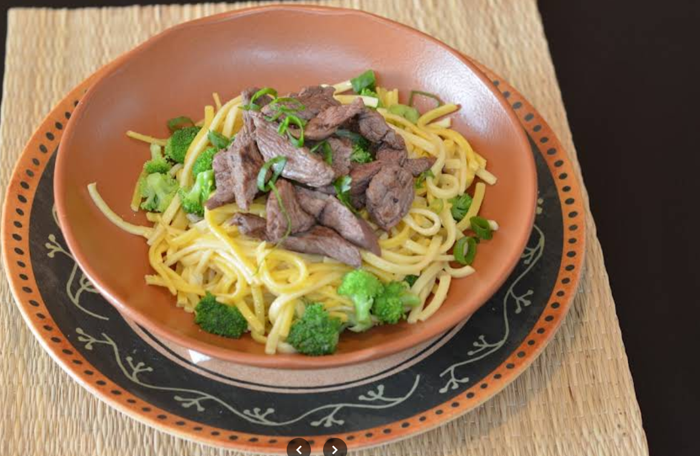
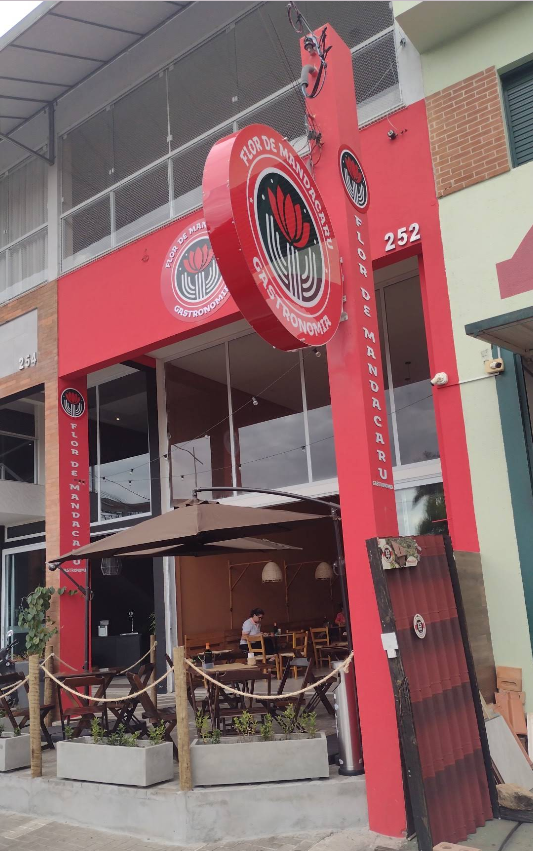
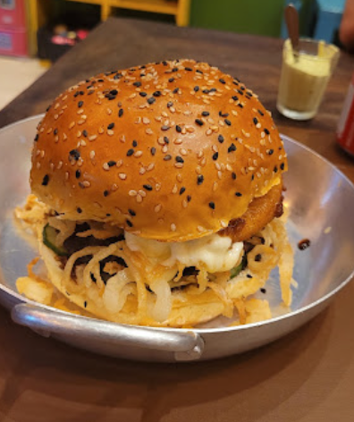

Ambiente aconchegante, tempero inesquecível e a verdadeira brasilidade no prato.
Reservar Mesa ou Fazer PedidoAmbiente decorado e acolhedor
Marmitas e pratos executivos
Sua refeição com segurança
Espaço totalmente adaptado

DestaqueOpções preparadas na hora com ingredientes selecionados, como nosso aclamado Filé de Tilápia com Purê de Banana da Terra.

Mesas ao ar livre com ombrelone e um clima super agradável para almoços em família ou encontros com amigos.

Sanduíches saborosos, saladas variadas e porções generosas com preço justo e tempero genuíno.
Resumo de avaliações gerado pelos visitantes que frequentam a Flor de Mandacaru.
"Local acolhedor, decoração linda, atendimento impecável e a comida uma delícia."
Cliente do Google
Avaliação verificada
"Comi filé de tilápia com purê de banana da terra! Simplesmente espetacular o sabor."
Cliente do Google
Avaliação verificada
"Comida deliciosa e bem temperada, porções generosas, ambiente muito limpo e preços super justos!"
Resumo da Comunidade
Média 4,5 estrelas
Av. Dr. Durval Nicolau, 252 - Parque Res. Jardim São Domingos
São João da Boa Vista - SP, 13874-245
Aberto diariamente
Fecha às 22:30
(19) 99677-2509